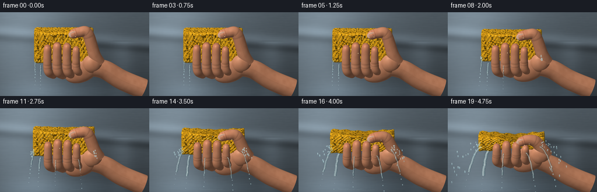
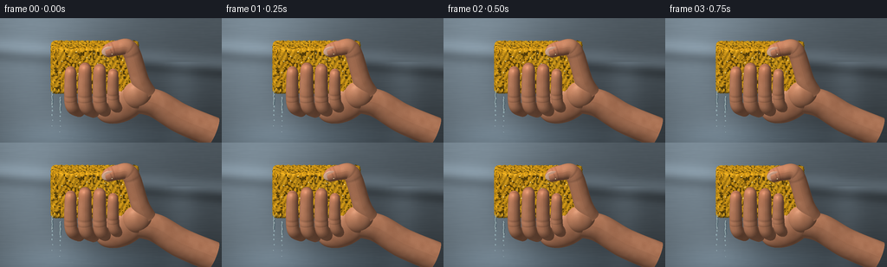

CODING AGENTS AS PIXEL WORLD MODELS
traex/GPT-6.1-Sol · phygen_011
点击播放 · 原生 RGB 像素
逐轮保存的候选
回放视频、检查图与代码变化。
每份候选均可单独播放。实际图片检查记录在下方工具轨迹中。
候选 01播放与检查图
点击播放 · 原生 RGB 像素


展开代码变化
--- 上一保存版本
+++ 本次保存版本
@@ -0,0 +1,384 @@
+"""Text-only procedural RGB animation: a saturated sponge squeezed over a sink.
+All geometry, textures, illumination and animation are generated locally.
+"""
+from pathlib import Path
+import json, math
+import numpy as np
+from PIL import Image, ImageDraw, ImageFilter
+from scipy.ndimage import gaussian_filter, map_coordinates
+import artifact_io
+
+ROOT=Path(__file__).resolve().parent
+SPEC=json.loads((ROOT/'task_spec.json').read_text())
+SCALE=3
+W,H=SPEC['width']*SCALE,SPEC['height']*SCALE
+PIX=W/9.7
+CENTER=np.array([W*.475,H*.477])
+# Slightly elevated view shows the wet top and front of the sponge.
+RIGHT=np.array([1.,0.,0.]); UP=np.array([0.,.967,-.255]); VIEW=np.array([0.,.255,.967])
+LIGHT=np.array([-.42,.67,.61]); LIGHT/=np.linalg.norm(LIGHT)
+rng=np.random.default_rng(8451)
+
+
+def project(p):
+ p=np.asarray(p)
+ return np.stack([CENTER[0]+p@RIGHT*PIX,CENTER[1]-p@UP*PIX,p@VIEW],axis=-1)
+
+
+def noise3(p, frequency=1, seed=0):
+ p=np.asarray(p)*frequency
+ q=np.floor(p); f=p-q; f=f*f*(3-2*f)
+ ans=np.zeros(p.shape[:-1])
+ for i in (0,1):
+ for j in (0,1):
+ for k in (0,1):
+ a=q+np.array([i,j,k])
+ v=np.sin(a[...,0]*127.1+a[...,1]*311.7+a[...,2]*74.7+seed*21.31)*43758.5453
+ v=v-np.floor(v)
+ ans+=v*(f[...,0] if i else 1-f[...,0])*(f[...,1] if j else 1-f[...,1])*(f[...,2] if k else 1-f[...,2])
+ return ans
+
+
+def background():
+ yy,xx=np.mgrid[0:H,0:W]
+ x=xx/W;y=yy/H
+ n=gaussian_filter(rng.normal(size=(H,W)),SCALE*1.5)
+ # Out-of-focus stainless sink: broad cold brushed reflections and a dark basin.
+ lum=112+29*np.exp(-((x-.15)/.3)**2)-35*y+15*np.sin(4*x+1)
+ lum+=24*np.exp(-((y-(.22+.14*x))/.065)**2)
+ lum-=24*np.exp(-((y-(.30+.14*x))/.05)**2)
+ lum+=17*np.exp(-((x-.82)/.075)**2)*(y>.35)
+ lum+=12*np.exp(-((x-.25)/.16)**2)*np.exp(-((y-.90)/.16)**2)
+ base=np.stack([lum*.83,lum*.94,lum*1.02],-1)
+ base+=n[...,None]*4
+ # Very diffuse brushed marks, a soft pool in the basin at the bottom.
+ brush=gaussian_filter(rng.normal(size=(H,W)),sigma=(.7,19))
+ base+=brush[...,None]*9
+ pool=np.exp(-(((x-.43)/.5)**2+((y-.96)/.11)**2))
+ base+=pool[...,None]*np.array([11,15,18])
+ # subtle vignette
+ base*= (1-.12*((x-.48)**2+(y-.47)**2))[...,None]
+ return np.clip(base,0,255).astype(np.float32)
+
+BG=background()
+
+class Renderer:
+ def __init__(self):
+ self.depth=np.full((H,W),-1e5,np.float32)
+ self.pos=np.zeros((H,W,3),np.float32)
+ self.nrm=np.zeros((H,W,3),np.float32)
+ self.tex=np.zeros((H,W,3),np.float32)
+ self.mat=np.zeros((H,W),np.uint8)
+ def mesh(self,p,normal,tex,tris,mat):
+ pr=project(p)
+ for tri in tris:
+ a,b,c=pr[tri]
+ # A flat zbuffer rasterizer, normals are smooth and per-pixel.
+ xmin=max(0,int(np.floor(min(a[0],b[0],c[0])))); xmax=min(W-1,int(np.ceil(max(a[0],b[0],c[0]))))
+ ymin=max(0,int(np.floor(min(a[1],b[1],c[1])))); ymax=min(H-1,int(np.ceil(max(a[1],b[1],c[1]))))
+ if xmin>xmax or ymin>ymax: continue
+ den=(b[1]-c[1])*(a[0]-c[0])+(c[0]-b[0])*(a[1]-c[1])
+ if abs(den)<1e-7:continue
+ ys,xs=np.mgrid[ymin:ymax+1,xmin:xmax+1]
+ aa=((b[1]-c[1])*(xs+.5-c[0])+(c[0]-b[0])*(ys+.5-c[1]))/den
+ bb=((c[1]-a[1])*(xs+.5-c[0])+(a[0]-c[0])*(ys+.5-c[1]))/den
+ cc=1-aa-bb
+ zz=aa*a[2]+bb*b[2]+cc*c[2]
+ sub=self.depth[ymin:ymax+1,xmin:xmax+1]
+ hit=(aa>=-.0001)&(bb>=-.0001)&(cc>=-.0001)&(zz>sub)
+ if not hit.any():continue
+ bary=np.stack([aa[hit],bb[hit],cc[hit]],-1)
+ sub[hit]=zz[hit]
+ self.pos[ymin:ymax+1,xmin:xmax+1][hit]=bary@p[tri]
+ self.nrm[ymin:ymax+1,xmin:xmax+1][hit]=bary@normal[tri]
+ self.tex[ymin:ymax+1,xmin:xmax+1][hit]=bary@tex[tri]
+ self.mat[ymin:ymax+1,xmin:xmax+1][hit]=mat
+ def shade(self,pressure):
+ image=BG.copy()
+ mask=self.mat>0
+ p=self.pos[mask]; n=self.nrm[mask]; tex=self.tex[mask]; mat=self.mat[mask]
+ n/=np.maximum(np.linalg.norm(n,axis=1,keepdims=True),1e-6)
+ diff=np.maximum(n@LIGHT,0)
+ nv=np.maximum(n@VIEW,0)
+ half=LIGHT+VIEW;half/=np.linalg.norm(half)
+ highlight=np.maximum(n@half,0)
+ color=np.zeros_like(p)
+ sp=mat==1
+ if sp.any():
+ q=tex[sp]
+ # Cells of open polyurethane foam: two populations of uneven cavities.
+ coarse=noise3(q,16.5,3); fine=noise3(q,37,2); grain=noise3(q,84,17)
+ pits=np.clip((.39-coarse)*6.0,0,1)
+ micro=np.clip((.33-fine)*4.8,0,1)
+ var=noise3(q,3.4,6)
+ base=np.stack([225+19*var,159+25*var,20+15*var],1)
+ base*= (1-.54*pits-.19*micro)[...,None]
+ base+=((grain-.5)*15)[:,None]
+ # Pore walls have warm sunlit lips, wet tiny highlights.
+ base+=(np.exp(-((coarse-.41)/.045)**2)*11)[:,None]*np.array([1,.75,.25])
+ illumination=.40+.66*diff[sp]
+ # Front lower edge is occluded by fingers; central pressure crease.
+ contact=np.exp(-((q[:,0]-.25)/.80)**2)*np.exp(-((q[:,1]-.85)/.5)**2)*pressure
+ illumination*=1-.18*contact
+ wet=np.maximum(highlight[sp],0)**44*(10+16*fine)
+ wet+=(np.maximum(grain-.79,0)*80)*(diff[sp]>.65)
+ color[sp]=base*illumination[:,None]+wet[:,None]*np.array([1.,1.,.80])
+ skin=(mat==2)
+ if skin.any():
+ q=tex[skin]; pos=p[skin]
+ var=noise3(pos,4.8,11); grain=noise3(pos,58,3)
+ base=np.stack([191+14*var,127+13*var,93+12*var],1)
+ base+=(grain-.5)[:,None]*5
+ # The local tube coordinate carries anatomical folds at both knuckles.
+ along=q[:,0];angle=q[:,1]; digit=q[:,2]
+ crease=np.zeros(len(q))
+ for v in [.37,.43,.68,.73]:
+ crease+=np.exp(-((along-v)/.009)**2)
+ front=np.clip(np.cos(angle),0,1)
+ crease*=front*(digit>0)
+ base*= (1-.14*np.clip(crease,0,1))[:,None]
+ # Pressure blanching at fingertips, pink cuticles and knuckles.
+ blush=np.exp(-((along-.72)/.15)**2)*(digit>0)
+ base+=blush[:,None]*np.array([6,-2,-2])
+ blanch=np.exp(-((along-.93)/.13)**2)*pressure*(digit>0)
+ base+=blanch[:,None]*np.array([16,17,13])
+ illumination=.40+.67*diff[skin]+.08*(1-nv[skin])
+ shine=(highlight[skin]**33)*14+(highlight[skin]**120)*10
+ color[skin]=base*illumination[:,None]+shine[:,None]
+ nail=mat==3
+ if nail.any():
+ q=tex[nail]
+ base=np.tile(np.array([211.,165.,140.]),(nail.sum(),1))
+ moon=np.exp(-((q[:,1]+.63)/.22)**2)*np.exp(-(q[:,0]/.8)**6)
+ base+=moon[:,None]*np.array([13,15,14])
+ edge=np.clip((np.abs(q[:,1])-.67)*4,0,1)
+ base+=edge[:,None]*np.array([8,11,12])
+ color[nail]=base*(.56+.48*diff[nail])[:,None]+(highlight[nail]**62*41)[:,None]
+ image[mask]=np.clip(color,0,255)
+ # An unobtrusive scene shadow grounds the hand over the sink.
+ silhouette=gaussian_filter(mask.astype(float),14*SCALE)
+ outside=~mask
+ image[outside]*=(1-.14*silhouette[outside,None])
+ return image
+
+
+def gridtris(n,m):
+ a=np.arange(n*m).reshape(n,m)
+ return np.concatenate([np.stack([a[:-1,:-1].ravel(),a[1:,:-1].ravel(),a[1:,1:].ravel()],1),np.stack([a[:-1,:-1].ravel(),a[1:,1:].ravel(),a[:-1,1:].ravel()],1)])
+
+
+def normals_grid(p):
+ du=np.gradient(p,axis=0);dv=np.gradient(p,axis=1)
+ n=np.cross(du,dv);n/=np.maximum(np.linalg.norm(n,axis=-1,keepdims=True),1e-9)
+ # parameter surfaces are oriented independently; fix using outward radial vector
+ return n
+
+
+def sponge(r,pressure):
+ hw,hy,hz=1.9,1.04,.73
+ for axis in range(3):
+ for side in (-1,1):
+ axes=[a for a in range(3) if a!=axis]
+ n,m=(63,41) if axis!=0 else (37,39)
+ u,v=np.meshgrid(np.linspace(-1,1,n),np.linspace(-1,1,m),indexing='ij')
+ p=np.zeros((n,m,3));p[...,axis]=side*np.array([hw,hy,hz])[axis]
+ p[...,axes[0]]=u*np.array([hw,hy,hz])[axes[0]]
+ p[...,axes[1]]=v*np.array([hw,hy,hz])[axes[1]]
+ inner=np.array([hw,hy,hz])-.16
+ c=np.maximum(np.minimum(p,inner),-inner)
+ off=p-c;off/=np.maximum(np.linalg.norm(off,axis=-1,keepdims=True),1e-9)
+ p=c+.16*off
+ tex=p.copy()
+ # Coherent cellular surface roughness, not temporal image noise.
+ rough=.027*np.sin(p[...,0]*28+p[...,1]*13)*np.sin(p[...,1]*29+p[...,2]*12)+.018*np.sin(p[...,0]*49+p[...,2]*35)
+ p+=off*rough[...,None]
+ x,y,z=p[...,0].copy(),p[...,1].copy(),p[...,2].copy()
+ # Increasing pinch across the sponge height, with outward side bulges.
+ central=np.exp(-((x-.2)/1.15)**2)
+ thickness=1-pressure*(.51+.19*central)
+ p[...,1]=y*thickness+.47
+ p[...,0]=x*(1+.09*pressure)+.065*pressure*np.sin(y*5+z*4)
+ p[...,2]=z*(1+.14*pressure*(1-(y/hy)**2))
+ # Buckled sides and the thumb's dent at the upper front.
+ p[...,1]-=pressure*.13*np.exp(-((x-.45)/.63)**2)*np.clip(y/hy,0,1)*np.clip((z+.3),0,1)
+ p[...,1]+=.042*pressure*np.sin(x*8.4+z*4)*(np.abs(y)/hy)**2
+ p[...,2]-=.09*pressure*np.exp(-((x-.45)/.7)**2)*np.clip(y/hy,0,1)
+ p[...,0]-=.46
+ normal=normals_grid(p)
+ # Orientation relative to original box, rather than winding.
+ sign=np.sign(np.mean(normal[...,axis]))
+ normal*=side*sign
+ r.mesh(p.reshape(-1,3),normal.reshape(-1,3),tex.reshape(-1,3),gridtris(n,m),1)
+
+
+def ellipsoid(r,center,radii,mat=2,rot=None):
+ theta=np.linspace(.0001,np.pi-.0001,31);phi=np.linspace(0,2*np.pi,49)
+ t,f=np.meshgrid(theta,phi,indexing='ij')
+ unit=np.stack([np.sin(t)*np.cos(f),np.cos(t),np.sin(t)*np.sin(f)],-1)
+ pos=unit*np.array(radii)
+ norm=unit/np.array(radii)
+ if rot is not None:pos=pos@rot.T;norm=norm@rot.T
+ pos+=center
+ norm/=np.maximum(np.linalg.norm(norm,axis=-1,keepdims=True),1e-9)
+ tex=np.zeros_like(pos)
+ if mat==3:
+ tex[...,0]=unit[...,0];tex[...,1]=unit[...,1]
+ r.mesh(pos.reshape(-1,3),norm.reshape(-1,3),tex.reshape(-1,3),gridtris(len(theta),len(phi)),mat)
+
+
+def catmull(points,steps=65):
+ ps=np.asarray(points,float); out=[]
+ for t in np.linspace(0,len(ps)-1,steps):
+ j=min(int(t),len(ps)-2);f=t-j
+ a=ps[max(0,j-1)];b=ps[j];c=ps[j+1];d=ps[min(len(ps)-1,j+2)]
+ out.append(.5*((2*b)+(-a+c)*f+(2*a-5*b+4*c-d)*f*f+(-a+3*b-3*c+d)*f**3))
+ return np.asarray(out)
+
+
+def tube(r,points,radius,digit=0):
+ path=catmull(points,69);ts=np.linspace(0,1,len(path))
+ tangent=np.gradient(path,axis=0);tangent/=np.linalg.norm(tangent,axis=1,keepdims=True)
+ # angle 0 points toward camera, for realistic front knuckle creases.
+ e1=VIEW-tangent*(tangent@VIEW)[:,None]
+ e1/=np.maximum(np.linalg.norm(e1,axis=1,keepdims=True),1e-7)
+ e2=np.cross(tangent,e1)
+ phi=np.linspace(0,2*np.pi,37)
+ radial=np.cos(phi)[None,:,None]*e1[:,None,:]+np.sin(phi)[None,:,None]*e2[:,None,:]
+ rr=np.interp(ts,np.linspace(0,1,len(radius)),radius)
+ # Tapered round tips with subtly prominent anatomical knuckles.
+ if digit:
+ rr*=1+.045*np.exp(-((ts-.40)/.08)**2)+.025*np.exp(-((ts-.7)/.05)**2)
+ for loc in [.37,.43,.68,.73]:rr*=1-.012*np.exp(-((ts-loc)/.012)**2)
+ pos=path[:,None,:]+radial*rr[:,None,None]
+ normal=normals_grid(pos)
+ if np.mean(np.sum(normal*radial,axis=-1))<0:normal=-normal
+ tex=np.zeros_like(pos);tex[...,0]=ts[:,None];tex[...,1]=phi[None,:];tex[...,2]=digit
+ r.mesh(pos.reshape(-1,3),normal.reshape(-1,3),tex.reshape(-1,3),gridtris(len(path),len(phi)),2)
+ return path
+
+
+def hand(r,p):
+ # A right hand approaching from the lower right. Broad thenar eminence and
+ # four independently articulated fingers cradle the sponge from below.
+ lift=.47*p
+ a=.49
+ rot=np.array([[math.cos(a),-math.sin(a),0],[math.sin(a),math.cos(a),0],[0,0,1.]])
+ tube(r,[[4.7,-2.52,-.20],[3.32,-1.87,-.02],[2.22,-1.15,.16],[1.38,-.92+lift*.4,.38]],[.67,.65,.62,.57],0)
+ ellipsoid(r,[.74,-1.04+lift,.39],[1.27,.83,.49],2,rot)
+ ellipsoid(r,[1.37,-.60+lift*.7,.63],[.66,.63,.44],2,rot)
+ # The back of the hand is hidden behind the sponge; digit tips are in front.
+ xs=[-1.52,-.89,-.25,.34]
+ lengths=[.82,1.09,1.03,.78]
+ radii=[.277,.306,.298,.252]
+ for i,(x,length,rr) in enumerate(zip(xs,lengths,radii)):
+ bottom=-1.12+lift + .09*(i==3)
+ top=-.06+length*.67 - .14*p + .05*(i==0)
+ px=x+.095*p
+ pts=[[x+.40,bottom-.27,.39],[x+.09,bottom,.88],[px,bottom+.46,.99+.06*p],[px,top-.12,1.09+.04*p],[px+.015,top,.96],[px+.05,top-.005,.87]]
+ tube(r,pts,[rr*1.07,rr*1.02,rr,rr*.94,rr*.76,.025],i+1)
+ # Convex short fingernail beds on the distal phalanges.
+ ellipsoid(r,[px+.012,top-.18,1.219+.035*p],[rr*.65,.22,.044],3)
+ # Opposing thumb descends onto the top/front of the sponge.
+ top=1.49-.80*p
+ pts=[[1.79,-.56+lift*.5,.49],[1.52,.04+lift*.17,.67],[1.08,top-.02,.80],[.54,top+.09,.91],[.06,top-.03,1.00],[-.12,top-.10,.91]]
+ tube(r,pts,[.43,.40,.365,.335,.29,.025],5)
+ # Thumbnail lies along the thumb's almost horizontal terminal phalanx.
+ ang=-1.20
+ nr=np.array([[math.cos(ang),-math.sin(ang),0],[math.sin(ang),math.cos(ang),0],[0,0,1]])
+ ellipsoid(r,[.12,top+.035,1.222],[.20,.29,.046],3,nr)
+
+
+def add_water(image,pressure,frame):
+ # Semi-transparent water with dark refractive edges and bright reflected
+ # window streaks. Individual drops follow ballistic trajectories.
+ im=Image.fromarray(np.uint8(np.clip(image,0,255))).convert('RGBA')
+ overlay=Image.new('RGBA',(W,H),(0,0,0,0));d=ImageDraw.Draw(overlay)
+ flow=.10+.9*pressure
+ h=.47-1.04*(1-.65*pressure)
+ sources=[(-2.32-.1*pressure,h+.07,.40),(-1.97,h-.09,.80),(-.98,h-.17,1.13),(.48,h-.12,1.20),(1.38,h+.16,.70)]
+ def line(coords,fill,width):
+ if len(coords)>1:d.line([tuple(a) for a in coords],fill=fill,width=max(1,int(width*SCALE)),joint='curve')
+ for j,(sx,sy,sz) in enumerate(sources):
+ if j>1 and pressure<.13*(j-1):continue
+ # Ejected water starts at contact and falls, accelerating downwards.
+ length=(1.45+flow*1.25)*(1 if j!=2 else .86)
+ steps=85
+ t=np.linspace(0,1,steps)
+ vx=([-1.10,-.46,-.12,.66,1.1][j])*pressure
+ x=sx+vx*t+.02*np.sin(t*31+frame*.8+j)*t
+ y=sy-length*t*t-.21*t
+ z=sz+.03*np.sin(t*14+j)
+ screen=project(np.stack([x,y,z],1))[:,:2]
+ width=(.95+flow*2.8)*([.90,1.22,.52,.55,.50][j])
+ # A stream becomes droplets near its end, while keeping a fluid upper body.
+ cut=64 if pressure>.4 else 49
+ line(screen[:cut],(28,61,70,87),width+1.2)
+ line(screen[:cut]+np.array([-.23*SCALE,0]),(163,190,191,108),width)
+ line(screen[:cut]+np.array([-.55*SCALE,0]),(227,244,239,157),max(.40,width*.22))
+ for k in range(0,cut-3,11):
+ if (k+frame+j)%3:
+ line(screen[k:k+4]+np.array([.4*SCALE,0]),(251,254,247,200),.48)
+ for k in range(cut+2,steps,7):
+ pp=screen[k];rr=(.5+.38*np.sin(k+j))*SCALE*max(.8,flow)
+ d.ellipse((pp[0]-rr,pp[1]-rr*1.7,pp[0]+rr,pp[1]+rr*1.7),fill=(154,190,196,145))
+ d.line((pp[0]-.3*SCALE,pp[1]-rr,pp[0]-.3*SCALE,pp[1]),fill=(240,251,249,200),width=max(1,SCALE//2))
+ # The rapidly increasing squeeze ejects a small fan of droplets at both ends.
+ local=np.random.default_rng(122)
+ for j in range(72):
+ side=-1 if j%2 else 1
+ birth=(j%18)/18
+ phase=(frame*.16+birth)%1
+ if phase>.16+.75*pressure or pressure<.12:continue
+ vel=.5+local.random()*1.8
+ sx=(-2.40 if side<0 else 1.45);sy=h+.15+local.random()*.3
+ age=phase*(.62+pressure*.5)
+ x=sx+side*vel*pressure*age
+ y=sy+(.8+local.random())*pressure*age-3.3*age**2
+ z=.8+local.random()*.45
+ pp=project([x,y,z])
+ rr=(.40+local.random()*.55)*SCALE
+ # Slight vertical motion blur at the faster part of the fall.
+ tail=(.3+age*2.0)*SCALE
+ d.ellipse((pp[0]-rr,pp[1]-rr-tail,pp[0]+rr,pp[1]+rr),fill=(155,192,199,150))
+ d.ellipse((pp[0]-rr*.6,pp[1]-rr-tail,pp[0]+rr*.05,pp[1]-tail),fill=(237,252,248,210))
+ # Drops on the wet foam; tiny mirror reflections, attached to its surface.
+ for j in range(23):
+ x=-2.05+(j*.391)%3.44
+ y0=-.55+(j*.723)%1.5
+ y=.47+y0*(1-.67*pressure)
+ z=.78
+ if y<.12:continue
+ pp=project([x,y,z]);ix,iy=map(int,pp[:2])
+ if 0<=ix<W and 0<=iy<H:
+ # Only foam, never draw sparkles through foreground fingers.
+ if image[iy,ix,0]>image[iy,ix,1]*1.25 and image[iy,ix,2]<65:
+ rr=.38*SCALE
+ d.ellipse((ix-rr,iy-rr,ix+rr,iy+rr),fill=(255,251,198,180))
+ # Expanding ring highlights where water reaches the sink floor.
+ for k in range(4):
+ age=(frame*.13+k*.23)%1
+ cx=W*(.30+.07*k);cy=H*.96
+ rx=(8+age*21)*SCALE;ry=(1.0+age*3.5)*SCALE
+ alpha=int((1-age)*(14+flow*40))
+ d.arc((cx-rx,cy-ry,cx+rx,cy+ry),8,171,fill=(201,222,225,alpha),width=max(1,SCALE//2))
+ return np.asarray(Image.alpha_composite(im,overlay).convert('RGB'))
+
+
+def main():
+ frames=[]
+ for f in range(SPEC['frames']):
+ t=f/(SPEC['frames']-1)
+ # Acceleration in applied pressure is visible in both grip and water flow.
+ p=t**1.85
+ r=Renderer()
+ sponge(r,p)
+ hand(r,p)
+ image=r.shade(p)
+ image=add_water(image,p,f)
+ image=Image.fromarray(image).resize((SPEC['width'],SPEC['height']),Image.Resampling.LANCZOS)
+ frames.append(np.array(image,dtype=np.uint8))
+ print(f'Rendered {f+1}/{SPEC["frames"]}, squeeze={p:.3f}',flush=True)
+ artifact_io.save(np.stack(frames),ROOT)
+ print('Saved RGB animation and player.',flush=True)
+
+if __name__=='__main__':main()
可观测工具轨迹
实际执行的命令与返回图片。
命令 1exit 0
/bin/bash -lc "ls -la && cat prompt.txt && printf '\\n--- RULES ---\\n' && cat GENERATION_RULES.md && printf '\\n--- SPEC ---\\n' && cat task_spec.json"
命令 2exit 0
/bin/bash -lc "cat artifact_io.py && printf '\\n--- PACKAGES ---\\n' && python - <<'PY' import importlib.util for x in ['numpy','PIL','scipy','cv2']: print(x, bool(importlib.util.find_spec(x))) PY"
命令 3exit 0
/bin/bash -lc 'command -v ffmpeg || true'
命令 4exit 0
/bin/bash -lc "cat > generate.py <<'PY'
\"\"\"Text-only procedural RGB animation: a saturated sponge squeezed over a sink.
All geometry, textures, illumination and animation are generated locally.
\"\"\"
from pathlib import Path
import json, math
import numpy as np
from PIL import Image, ImageDraw, ImageFilter
from scipy.ndimage import gaussian_filter, map_coordinates
import artifact_io
ROOT=Path(__file__).resolve().parent
SPEC=json.loads((ROOT/'task_spec.json').read_text())
SCALE=3
W,H=SPEC['width']*SCALE,SPEC['height']*SCALE
PIX=W/9.7
CENTER=np.array([W*.475,H*.477])
# Slightly elevated view shows the wet top and front of the sponge.
RIGHT=np.array([1.,0.,0.]); UP=np.array([0.,.967,-.255]); VIEW=np.array([0.,.255,.967])
LIGHT=np.array([-.42,.67,.61]); LIGHT/=np.linalg.norm(LIGHT)
rng=np.random.default_rng(8451)
def project(p):
p=np.asarray(p)
return np.stack([CENTER[0]+p@RIGHT*PIX,CENTER[1]-p@UP*PIX,p@VIEW],axis=-1)
def noise3(p, frequency=1, seed=0):
p=np.asarray(p)*frequency
q=np.floor(p); f=p-q; f=f*f*(3-2*f)
ans=np.zeros(p.shape[:-1])
for i in (0,1):
for j in (0,1):
for k in (0,1):
a=q+np.array([i,j,k])
v=np.sin(a[...,0]*127.1+a[...,1]*311.7+a[...,2]*74.7+seed*21.31)*43758.5453
v=v-np.floor(v)
ans+=v*(f[...,0] if i else 1-f[...,0])*(f[...,1] if j else 1-f[...,1])*(f[...,2] if k else 1-f[...,2])
return ans
def background():
yy,xx=np.mgrid[0:H,0:W]
x=xx/W;y=yy/H
n=gaussian_filter(rng.normal(size=(H,W)),SCALE*1.5)
# Out-of-focus stainless sink: broad cold brushed reflections and a dark basin.
lum=112+29*np.exp(-((x-.15)/.3)**2)-35*y+15*np.sin(4*x+1)
lum+=24*np.exp(-((y-(.22+.14*x))/.065)**2)
lum-=24*np.exp(-((y-(.30+.14*x))/.05)**2)
lum+=17*np.exp(-((x-.82)/.075)**2)*(y>.35)
lum+=12*np.exp(-((x-.25)/.16)**2)*np.exp(-((y-.90)/.16)**2)
base=np.stack([lum*.83,lum*.94,lum*1.02],-1)
base+=n[...,None]*4
# Very diffuse brushed marks, a soft pool in the basin at the bottom.
brush=gaussian_filter(rng.normal(size=(H,W)),sigma=(.7,19))
base+=brush[...,None]*9
pool=np.exp(-(((x-.43)/.5)**2+((y-.96)/.11)**2))
base+=pool[...,None]*np.array([11,15,18])
# subtle vignette
base*= (1-.12*((x-.48)**2+(y-.47)**2))[...,None]
return np.clip(base,0,255).astype(np.float32)
BG=background()
class Renderer:
def __init__(self):
self.depth=np.full((H,W),-1e5,np.float32)
self.pos=np.zeros((H,W,3),np.float32)
self.nrm=np.zeros((H,W,3),np.float32)
self.tex=np.zeros((H,W,3),np.float32)
self.mat=np.zeros((H,W),np.uint8)
def mesh(self,p,normal,tex,tris,mat):
pr=project(p)
for tri in tris:
a,b,c=pr[tri]
# A flat zbuffer rasterizer, normals are smooth and per-pixel.
xmin=max(0,int(np.floor(min(a[0],b[0],c[0])))); xmax=min(W-1,int(np.ceil(max(a[0],b[0],c[0]))))
ymin=max(0,int(np.floor(min(a[1],b[1],c[1])))); ymax=min(H-1,int(np.ceil(max(a[1],b[1],c[1]))))
if xmin>xmax or ymin>ymax: continue
den=(b[1]-c[1])*(a[0]-c[0])+(c[0]-b[0])*(a[1]-c[1])
if abs(den)<1e-7:continue
ys,xs=np.mgrid[ymin:ymax+1,xmin:xmax+1]
aa=((b[1]-c[1])*(xs+.5-c[0])+(c[0]-b[0])*(ys+.5-c[1]))/den
bb=((c[1]-a[1])*(xs+.5-c[0])+(a[0]-c[0])*(ys+.5-c[1]))/den
cc=1-aa-bb
zz=aa*a[2]+bb*b[2]+cc*c[2]
sub=self.depth[ymin:ymax+1,xmin:xmax+1]
hit=(aa>=-.0001)&(bb>=-.0001)&(cc>=-.0001)&(zz>sub)
if not hit.any():continue
bary=np.stack([aa[hit],bb[hit],cc[hit]],-1)
sub[hit]=zz[hit]
self.pos[ymin:ymax+1,xmin:xmax+1][hit]=bary@p[tri]
self.nrm[ymin:ymax+1,xmin:xmax+1][hit]=bary@normal[tri]
self.tex[ymin:ymax+1,xmin:xmax+1][hit]=bary@tex[tri]
self.mat[ymin:ymax+1,xmin:xmax+1][hit]=mat
def shade(self,pressure):
image=BG.copy()
mask=self.mat>0
p=self.pos[mask]; n=self.nrm[mask]; tex=self.tex[mask]; mat=self.mat[mask]
n/=np.maximum(np.linalg.norm(n,axis=1,keepdims=True),1e-6)
diff=np.maximum(n@LIGHT,0)
nv=np.maximum(n@VIEW,0)
half=LIGHT+VIEW;half/=np.linalg.norm(half)
highlight=np.maximum(n@half,0)
color=np.zeros_like(p)
sp=mat==1
if sp.any():
q=tex[sp]
# Cells of open polyurethane foam: two populations of uneven cavities.
coarse=noise3(q,16.5,3); fine=noise3(q,37,2); grain=noise3(q,84,17)
pits=np.clip((.39-coarse)*6.0,0,1)
micro=np.clip((.33-fine)*4.8,0,1)
var=noise3(q,3.4,6)
base=np.stack([225+19*var,159+25*var,20+15*var],1)
base*= (1-.54*pits-.19*micro)[...,None]
base+=((grain-.5)*15)[:,None]
# Pore walls have warm sunlit lips, wet tiny highlights.
base+=(np.exp(-((coarse-.41)/.045)**2)*11)[:,None]*np.array([1,.75,.25])
illumination=.40+.66*diff[sp]
# Front lower edge is occluded by fingers; central pressure crease.
contact=np.exp(-((q[:,0]-.25)/.80)**2)*np.exp(-((q[:,1]-.85)/.5)**2)*pressure
illumination*=1-.18*contact
wet=np.maximum(highlight[sp],0)**44*(10+16*fine)
wet+=(np.maximum(grain-.79,0)*80)*(diff[sp]>.65)
color[sp]=base*illumination[:,None]+wet[:,None]*np.array([1.,1.,.80])
skin=(mat==2)
if skin.any():
q=tex[skin]; pos=p[skin]
var=noise3(pos,4.8,11); grain=noise3(pos,58,3)
base=np.stack([191+14*var,127+13*var,93+12*var],1)
base+=(grain-.5)[:,None]*5
# The local tube coordinate carries anatomical folds at both knuckles.
along=q[:,0];angle=q[:,1]; digit=q[:,2]
crease=np.zeros(len(q))
for v in [.37,.43,.68,.73]:
crease+=np.exp(-((along-v)/.009)**2)
front=np.clip(np.cos(angle),0,1)
crease*=front*(digit>0)
base*= (1-.14*np.clip(crease,0,1))[:,None]
# Pressure blanching at fingertips, pink cuticles and knuckles.
blush=np.exp(-((along-.72)/.15)**2)*(digit>0)
base+=blush[:,None]*np.array([6,-2,-2])
blanch=np.exp(-((along-.93)/.13)**2)*pressure*(digit>0)
base+=blanch[:,None]*np.array([16,17,13])
illumination=.40+.67*diff[skin]+.08*(1-nv[skin])
shine=(highlight[skin]**33)*14+(highlight[skin]**120)*10
color[skin]=base*illumination[:,None]+shine[:,None]
nail=mat==3
if nail.any():
q=tex[nail]
base=np.tile(np.array([211.,165.,140.]),(nail.sum(),1))
moon=np.exp(-((q[:,1]+.63)/.22)**2)*np.exp(-(q[:,0]/.8)**6)
base+=moon[:,None]*np.array([13,15,14])
edge=np.clip((np.abs(q[:,1])-.67)*4,0,1)
base+=edge[:,None]*np.array([8,11,12])
color[nail]=base*(.56+.48*diff[nail])[:,None]+(highlight[nail]**62*41)[:,None]
image[mask]=np.clip(color,0,255)
# An unobtrusive scene shadow grounds the hand over the sink.
silhouette=gaussian_filter(mask.astype(float),14*SCALE)
outside=~mask
image[outside]*=(1-.14*silhouette[outside,None])
return image
def gridtris(n,m):
a=np.arange(n*m).reshape(n,m)
return np.concatenate([np.stack([a[:-1,:-1].ravel(),a[1:,:-1].ravel(),a[1:,1:].ravel()],1),np.stack([a[:-1,:-1].ravel(),a[1:,1:].ravel(),a[:-1,1:].ravel()],1)])
def normals_grid(p):
du=np.gradient(p,axis=0);dv=np.gradient(p,axis=1)
n=np.cross(du,dv);n/=np.maximum(np.linalg.norm(n,axis=-1,keepdims=True),1e-9)
# parameter surfaces are oriented independently; fix using outward radial vector
return n
def sponge(r,pressure):
hw,hy,hz=1.9,1.04,.73
for axis in range(3):
for side in (-1,1):
axes=[a for a in range(3) if a"'!=axis]
n,m=(63,41) if axis!=0 else (37,39)
u,v=np.meshgrid(np.linspace(-1,1,n),np.linspace(-1,1,m),indexing='"'ij')
p=np.zeros((n,m,3));p[...,axis]=side*np.array([hw,hy,hz])[axis]
p[...,axes[0]]=u*np.array([hw,hy,hz])[axes[0]]
p[...,axes[1]]=v*np.array([hw,hy,hz])[axes[1]]
inner=np.array([hw,hy,hz])-.16
c=np.maximum(np.minimum(p,inner),-inner)
off=p-c;off/=np.maximum(np.linalg.norm(off,axis=-1,keepdims=True),1e-9)
p=c+.16*off
tex=p.copy()
# Coherent cellular surface roughness, not temporal image noise.
rough=.027*np.sin(p[...,0]*28+p[...,1]*13)*np.sin(p[...,1]*29+p[...,2]*12)+.018*np.sin(p[...,0]*49+p[...,2]*35)
p+=off*rough[...,None]
x,y,z=p[...,0].copy(),p[...,1].copy(),p[...,2].copy()
# Increasing pinch across the sponge height, with outward side bulges.
central=np.exp(-((x-.2)/1.15)**2)
thickness=1-pressure*(.51+.19*central)
p[...,1]=y*thickness+.47
p[...,0]=x*(1+.09*pressure)+.065*pressure*np.sin(y*5+z*4)
p[...,2]=z*(1+.14*pressure*(1-(y/hy)**2))
# Buckled sides and the thumb's dent at the upper front.
p[...,1]-=pressure*.13*np.exp(-((x-.45)/.63)**2)*np.clip(y/hy,0,1)*np.clip((z+.3),0,1)
p[...,1]+=.042*pressure*np.sin(x*8.4+z*4)*(np.abs(y)/hy)**2
p[...,2]-=.09*pressure*np.exp(-((x-.45)/.7)**2)*np.clip(y/hy,0,1)
p[...,0]-=.46
normal=normals_grid(p)
# Orientation relative to original box, rather than winding.
sign=np.sign(np.mean(normal[...,axis]))
normal*=side*sign
r.mesh(p.reshape(-1,3),normal.reshape(-1,3),tex.reshape(-1,3),gridtris(n,m),1)
def ellipsoid(r,center,radii,mat=2,rot=None):
theta=np.linspace(.0001,np.pi-.0001,31);phi=np.linspace(0,2*np.pi,49)
t,f=np.meshgrid(theta,phi,indexing='ij')
unit=np.stack([np.sin(t)*np.cos(f),np.cos(t),np.sin(t)*np.sin(f)],-1)
pos=unit*np.array(radii)
norm=unit/np.array(radii)
if rot is not None:pos=pos@rot.T;norm=norm@rot.T
pos+=center
norm/=np.maximum(np.linalg.norm(norm,axis=-1,keepdims=True),1e-9)
tex=np.zeros_like(pos)
if mat==3:
tex[...,0]=unit[...,0];tex[...,1]=unit[...,1]
r.mesh(pos.reshape(-1,3),norm.reshape(-1,3),tex.reshape(-1,3),gridtris(len(theta),len(phi)),mat)
def catmull(points,steps=65):
ps=np.asarray(points,float); out=[]
for t in np.linspace(0,len(ps)-1,steps):
j=min(int(t),len(ps)-2);f=t-j
a=ps[max(0,j-1)];b=ps[j];c=ps[j+1];d=ps[min(len(ps)-1,j+2)]
out.append(.5*((2*b)+(-a+c)*f+(2*a-5*b+4*c-d)*f*f+(-a+3*b-3*c+d)*f**3))
return np.asarray(out)
def tube(r,points,radius,digit=0):
path=catmull(points,69);ts=np.linspace(0,1,len(path))
tangent=np.gradient(path,axis=0);tangent/=np.linalg.norm(tangent,axis=1,keepdims=True)
# angle 0 points toward camera, for realistic front knuckle creases.
e1=VIEW-tangent*(tangent@VIEW)[:,None]
e1/=np.maximum(np.linalg.norm(e1,axis=1,keepdims=True),1e-7)
e2=np.cross(tangent,e1)
phi=np.linspace(0,2*np.pi,37)
radial=np.cos(phi)[None,:,None]*e1[:,None,:]+np.sin(phi)[None,:,None]*e2[:,None,:]
rr=np.interp(ts,np.linspace(0,1,len(radius)),radius)
# Tapered round tips with subtly prominent anatomical knuckles.
if digit:
rr*=1+.045*np.exp(-((ts-.40)/.08)**2)+.025*np.exp(-((ts-.7)/.05)**2)
for loc in [.37,.43,.68,.73]:rr*=1-.012*np.exp(-((ts-loc)/.012)**2)
pos=path[:,None,:]+radial*rr[:,None,None]
normal=normals_grid(pos)
if np.mean(np.sum(normal*radial,axis=-1))<0:normal=-normal
tex=np.zeros_like(pos);tex[...,0]=ts[:,None];tex[...,1]=phi[None,:];tex[...,2]=digit
r.mesh(pos.reshape(-1,3),normal.reshape(-1,3),tex.reshape(-1,3),gridtris(len(path),len(phi)),2)
return path
def hand(r,p):
# A right hand approaching from the lower right. Broad thenar eminence and
# four independently articulated fingers cradle the sponge from below.
lift=.47*p
a=.49
rot=np.array([[math.cos(a),-math.sin(a),0],[math.sin(a),math.cos(a),0],[0,0,1.]])
tube(r,[[4.7,-2.52,-.20],[3.32,-1.87,-.02],[2.22,-1.15,.16],[1.38,-.92+lift*.4,.38]],[.67,.65,.62,.57],0)
ellipsoid(r,[.74,-1.04+lift,.39],[1.27,.83,.49],2,rot)
ellipsoid(r,[1.37,-.60+lift*.7,.63],[.66,.63,.44],2,rot)
# The back of the hand is hidden behind the sponge; digit tips are in front.
xs=[-1.52,-.89,-.25,.34]
lengths=[.82,1.09,1.03,.78]
radii=[.277,.306,.298,.252]
for i,(x,length,rr) in enumerate(zip(xs,lengths,radii)):
bottom=-1.12+lift + .09*(i==3)
top=-.06+length*.67 - .14*p + .05*(i==0)
px=x+.095*p
pts=[[x+.40,bottom-.27,.39],[x+.09,bottom,.88],[px,bottom+.46,.99+.06*p],[px,top-.12,1.09+.04*p],[px+.015,top,.96],[px+.05,top-.005,.87]]
tube(r,pts,[rr*1.07,rr*1.02,rr,rr*.94,rr*.76,.025],i+1)
# Convex short fingernail beds on the distal phalanges.
ellipsoid(r,[px+.012,top-.18,1.219+.035*p],[rr*.65,.22,.044],3)
# Opposing thumb descends onto the top/front of the sponge.
top=1.49-.80*p
pts=[[1.79,-.56+lift*.5,.49],[1.52,.04+lift*.17,.67],[1.08,top-.02,.80],[.54,top+.09,.91],[.06,top-.03,1.00],[-.12,top-.10,.91]]
tube(r,pts,[.43,.40,.365,.335,.29,.025],5)
# Thumbnail lies along the thumb's almost horizontal terminal phalanx.
ang=-1.20
nr=np.array([[math.cos(ang),-math.sin(ang),0],[math.sin(ang),math.cos(ang),0],[0,0,1]])
ellipsoid(r,[.12,top+.035,1.222],[.20,.29,.046],3,nr)
def add_water(image,pressure,frame):
# Semi-transparent water with dark refractive edges and bright reflected
# window streaks. Individual drops follow ballistic trajectories.
im=Image.fromarray(np.uint8(np.clip(image,0,255))).convert('RGBA')
overlay=Image.new('RGBA',(W,H),(0,0,0,0));d=ImageDraw.Draw(overlay)
flow=.10+.9*pressure
h=.47-1.04*(1-.65*pressure)
sources=[(-2.32-.1*pressure,h+.07,.40),(-1.97,h-.09,.80),(-.98,h-.17,1.13),(.48,h-.12,1.20),(1.38,h+.16,.70)]
def line(coords,fill,width):
if len(coords)>1:d.line([tuple(a) for a in coords],fill=fill,width=max(1,int(width*SCALE)),joint='curve')
for j,(sx,sy,sz) in enumerate(sources):
if j>1 and pressure<.13*(j-1):continue
# Ejected water starts at contact and falls, accelerating downwards.
length=(1.45+flow*1.25)*(1 if j"'!=2 else .86)
steps=85
t=np.linspace(0,1,steps)
vx=([-1.10,-.46,-.12,.66,1.1][j])*pressure
x=sx+vx*t+.02*np.sin(t*31+frame*.8+j)*t
y=sy-length*t*t-.21*t
z=sz+.03*np.sin(t*14+j)
screen=project(np.stack([x,y,z],1))[:,:2]
width=(.95+flow*2.8)*([.90,1.22,.52,.55,.50][j])
# A stream becomes droplets near its end, while keeping a fluid upper body.
cut=64 if pressure>.4 else 49
line(screen[:cut],(28,61,70,87),width+1.2)
line(screen[:cut]+np.array([-.23*SCALE,0]),(163,190,191,108),width)
line(screen[:cut]+np.array([-.55*SCALE,0]),(227,244,239,157),max(.40,width*.22))
for k in range(0,cut-3,11):
if (k+frame+j)%3:
line(screen[k:k+4]+np.array([.4*SCALE,0]),(251,254,247,200),.48)
for k in range(cut+2,steps,7):
pp=screen[k];rr=(.5+.38*np.sin(k+j))*SCALE*max(.8,flow)
d.ellipse((pp[0]-rr,pp[1]-rr*1.7,pp[0]+rr,pp[1]+rr*1.7),fill=(154,190,196,145))
d.line((pp[0]-.3*SCALE,pp[1]-rr,pp[0]-.3*SCALE,pp[1]),fill=(240,251,249,200),width=max(1,SCALE//2))
# The rapidly increasing squeeze ejects a small fan of droplets at both ends.
local=np.random.default_rng(122)
for j in range(72):
side=-1 if j%2 else 1
birth=(j%18)/18
phase=(frame*.16+birth)%1
if phase>.16+.75*pressure or pressure<.12:continue
vel=.5+local.random()*1.8
sx=(-2.40 if side<0 else 1.45);sy=h+.15+local.random()*.3
age=phase*(.62+pressure*.5)
x=sx+side*vel*pressure*age
y=sy+(.8+local.random())*pressure*age-3.3*age**2
z=.8+local.random()*.45
pp=project([x,y,z])
rr=(.40+local.random()*.55)*SCALE
# Slight vertical motion blur at the faster part of the fall.
tail=(.3+age*2.0)*SCALE
d.ellipse((pp[0]-rr,pp[1]-rr-tail,pp[0]+rr,pp[1]+rr),fill=(155,192,199,150))
d.ellipse((pp[0]-rr*.6,pp[1]-rr-tail,pp[0]+rr*.05,pp[1]-tail),fill=(237,252,248,210))
# Drops on the wet foam; tiny mirror reflections, attached to its surface.
for j in range(23):
x=-2.05+(j*.391)%3.44
y0=-.55+(j*.723)%1.5
y=.47+y0*(1-.67*pressure)
z=.78
if y<.12:continue
pp=project([x,y,z]);ix,iy=map(int,pp[:2])
if 0<=ix<W and 0<=iy<H:
# Only foam, never draw sparkles through foreground fingers.
if image[iy,ix,0]>image[iy,ix,1]*1.25 and image[iy,ix,2]<65:
rr=.38*SCALE
d.ellipse((ix-rr,iy-rr,ix+rr,iy+rr),fill=(255,251,198,180))
# Expanding ring highlights where water reaches the sink floor.
for k in range(4):
age=(frame*.13+k*.23)%1
cx=W*(.30+.07*k);cy=H*.96
rx=(8+age*21)*SCALE;ry=(1.0+age*3.5)*SCALE
alpha=int((1-age)*(14+flow*40))
d.arc((cx-rx,cy-ry,cx+rx,cy+ry),8,171,fill=(201,222,225,alpha),width=max(1,SCALE//2))
return np.asarray(Image.alpha_composite(im,overlay).convert('"'RGB'))
def main():
frames=[]
for f in range(SPEC['frames']):
t=f/(SPEC['frames']-1)
# Acceleration in applied pressure is visible in both grip and water flow.
p=t**1.85
r=Renderer()
sponge(r,p)
hand(r,p)
image=r.shade(p)
image=add_water(image,p,f)
image=Image.fromarray(image).resize((SPEC['width'],SPEC['height']),Image.Resampling.LANCZOS)
frames.append(np.array(image,dtype=np.uint8))
print(f'Rendered {f+1}/{SPEC[\"frames\"]}, squeeze={p:.3f}',flush=True)
artifact_io.save(np.stack(frames),ROOT)
print('Saved RGB animation and player.',flush=True)
if __name__=='__main__':main()
PY
python generate.py"命令 5exit 0
/bin/bash -lc "python - <<'PY'
from pathlib import Path
import numpy as np
from PIL import Image
import cv2
import generate
frames=np.stack([np.asarray(Image.open(Path('frames')/f'{i:02d}.png').convert('RGB')) for i in range(20)])
assert frames.shape==(20,144,256,3) and frames.dtype==np.uint8
assert np.all(np.mean(np.abs(np.diff(frames.astype(float),axis=0)),axis=(1,2,3))>0)
p=np.load('pixels.npz')['pixels']
assert p.shape==(144,256,20)
for file in ['generate.py','index.html','inspection.png','transition_check.png','pixels.npz']:
assert Path(file).is_file()
generate.encode_mp4(frames)
c=cv2.VideoCapture('video.mp4')
print('MP4 frames:',int(c.get(cv2.CAP_PROP_FRAME_COUNT)),'dimensions:',int(c.get(cv2.CAP_PROP_FRAME_WIDTH)),int(c.get(cv2.CAP_PROP_FRAME_HEIGHT)),'fps:',c.get(cv2.CAP_PROP_FPS))
c.release()
print('Artifacts verified.')
PY
ls -lh video.mp4 pixels.npz index.html"保存候选 1 份；完成命令 5 次；可验证图片返回 0 张。原始 API 响应与完整日志保留在本地。